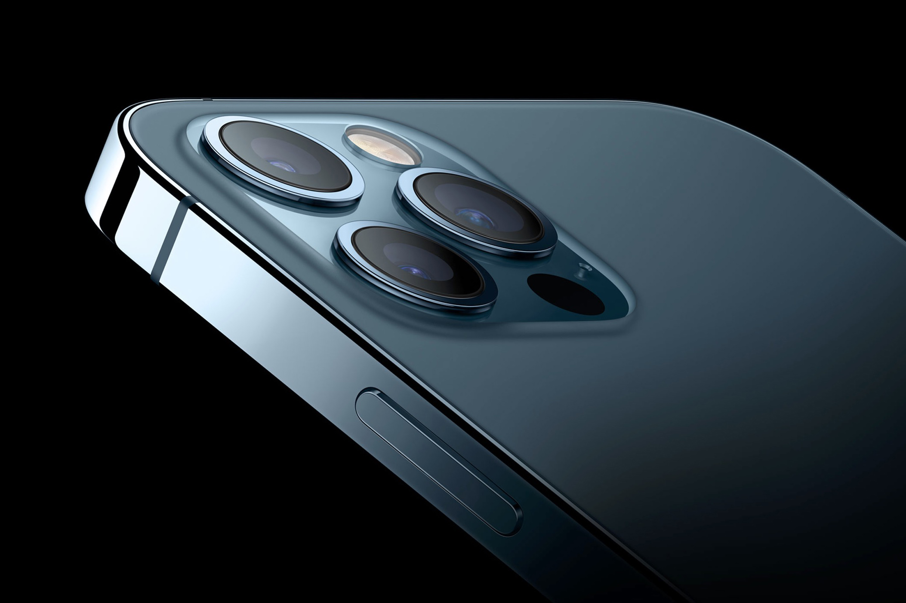

The iPhone 12 Pro Max has the same selfie camera and ultrawide camera as the 12 and 12 Pro, which perform just as well, but different main and telephoto cameras on the back.
The telephoto camera has a longer 2.5x optical zoom, up from 2x. Any increase in reach is welcome, but it pales in comparison to the 4x/5x optical zooms of competitors. The lens is slightly slower than that on the 12 Pro, making it worse in poor light. But both smartphones switch to the more light-sensitive main camera in low-light anyway.
The main camera has the same 12-megapixel resolution but a 47% physically larger sensor, which collects up to 87% more light than its predecessor.
In good light it shoots photos that are indistinguishable from the 12 Pro: highly detailed with good colour accuracy and control of high-contrast scenes.
In good light it shoots photos that are indistinguishable from the 12 Pro: highly detailed with good colour accuracy and control of high-contrast scenes.
When the light level starts to drop around dusk the larger sensor captures far brighter, more detailed and less noisy images that are a marked improvement over other iPhones. The same holds true for indoor shots on dull winter days. The dedicated Night Mode is needed less frequently, too, and when it does engage it captures photos quicker than the regular 12 Pro.
Overall, the 12 Pro Max has the best camera on any iPhone and has improved low-light performance over other iPhone 12 models. It also brings Apple up to par with top competitors, although the 2.5x optical zoom is still some way behind the best in the business.
